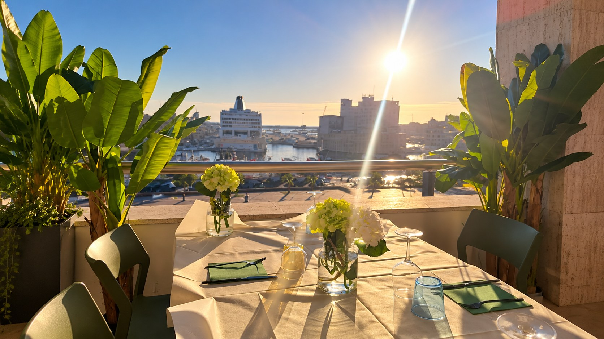
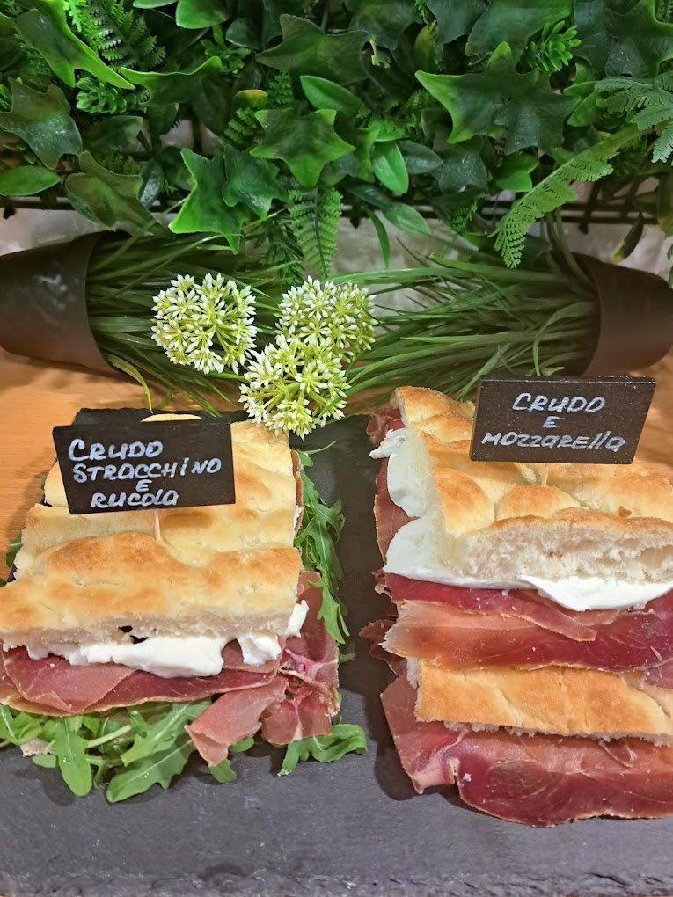
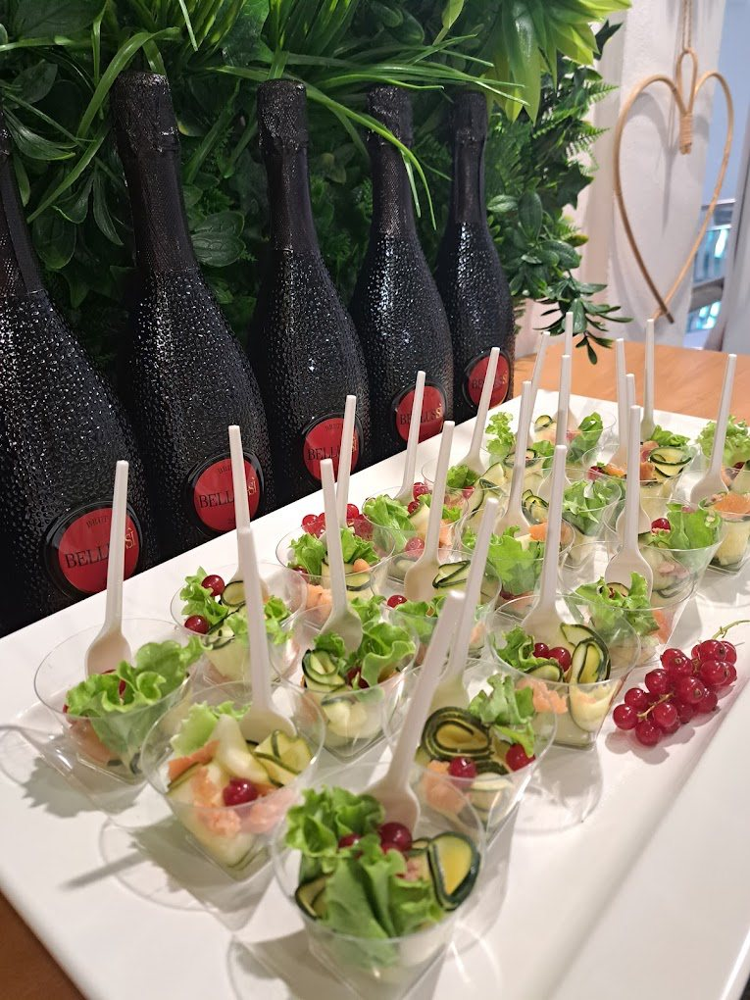
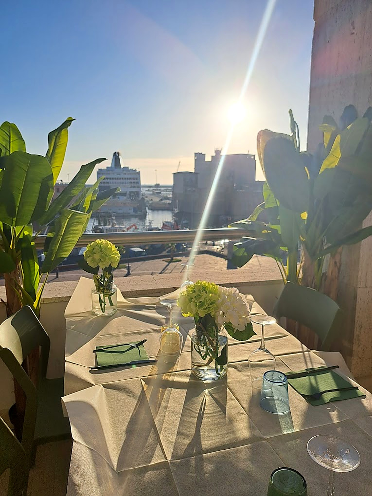

Café — Food & Drink
Sunshine
Livorno
Colazioni, pranzi, cene e aperitivi al tramonto.
Sapori

Per ogni momento
Dalla colazione all’aperitivo, passando per il pranzo e la cena: da noi c’è un sapore per ogni momento della giornata. Piatti freschi e leggeri, altri più sostanziosi, qualcosa di dolce per chiudere. Scegli secondo la voglia, e per i prezzi dai un’occhiata alla pagina dedicata.
Aperitivo

Al tramonto
Come diceva Dante, un aperitivo con una persona speciale è un toccasana per l’anima. Anche se Dante non ha mai detto queste parole, tu puoi venire a provare i nostri magici aperitivi con tutte le persone che ami.
Assaggi e bollicine per l’aperitivo.
Vista

La terrazza
Dalla nostra terrazza puoi goderti la vista sulla Fortezza Vecchia, una delle strutture più famose di Livorno: costruita dai Medici nel Cinquecento, si affaccia sul porto e sorge sui resti di un castello più antico.
A due passi dalla sua porta d’ingresso c’è il monumento dei Quattro Mori, un altro simbolo della città: la statua di Ferdinando I de’ Medici con quattro prigionieri in bronzo ai suoi piedi. Si dice che trovare il punto da cui si vedono tutti e quattro i nasi porti fortuna.
Ci vediamo
Via S. Giovanni 19, Livorno
Orario
- Lunedì8:00 – 21:00
- Martedì8:00 – 21:00
- Mercoledì8:00 – 21:00
- Giovedì8:00 – 21:00
- Venerdì8:00 – 21:00
- Sabato8:00 – 21:00
- DomenicaChiuso